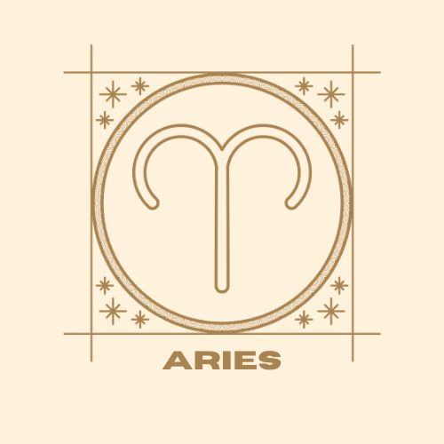
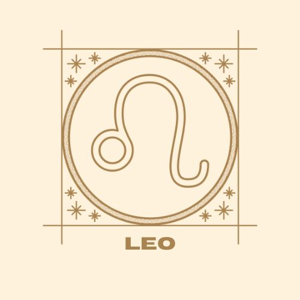
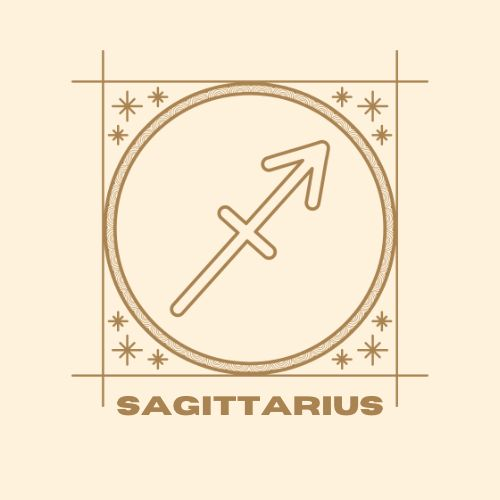
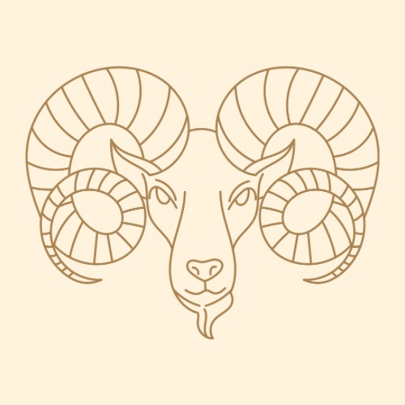
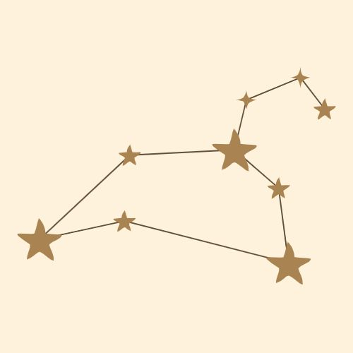
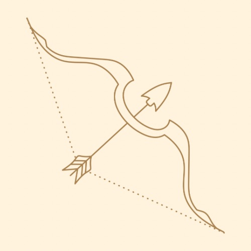
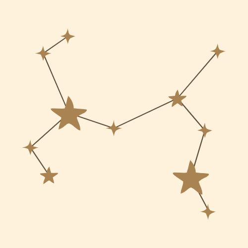

Scroll or select a sign by clicking on the images below to learn more!
  
Aries The Ram March 21 - April 19 At their core, Aries do things their own way. They are unafraid of conflict, highly competitive, and honest. They throw themselves at the world eagerly and without fear. Aries are driven by a desire to prove themselves and their strength. They have high energy, and are competitive and ambitious. They naturally take charge because they are good at initiating new projects. They can also be impatient, but are naturally active and don’t like to waste time. While Aries like competition, they don’t like to play games. They are highly self-aware, have strong opinions and are always ready to defend them.
Back to top
Leo The Lion July 22 - August 22Leos are bold, warm, and loving. They are also the ultimate performers. They can dazzle with the theatrical flair of a Broadway star and the charisma of a politician. They are captivating personalities. No matter how quickly they’ve just been introduced to a topic, they can speak eloquently about almost anything because they have such a way with words. Leos inject ambition into everything they do. They are ruled by the heart. Their actions are natural and effortless because they are brash and confident and trust their instincts. Leos have an unrelenting appetite for growth that is easily satiated by the praise of others. When they are hurting, it shows. They will use their anger as a protective wall to shield their vulnerabilities. They want to be perceived as unbreakable because they are scared of admitting vulnerability, needing things from other people, or being incomplete. 
Back to top
sagittarius The Archer November 22 - December 20 Sagittarians are the ultimate empiricists. They will always choose principles over feelings and will often question who they are. They move from job to job, philosophy to philosophy, belief to belief. They are explorers of the human condition and are unafraid of change. Sagittarians feel like the world is their playground. They love to explore the unknown. At their core, they want to understand how the world works. On an unbounded quest to discover the whole of the universe inside of themselves, Sagittarians are unshackled from any particular worldly attachment. They are reckless in their pursuit of what they want, and often end up doing and experiencing things that defy conceptions of the possible. Sagittarians are explorers. They are both the fearless adventurers and the jaded critics. They understand that knowledge comes in two forms: the shallow, disposable kind that comes from external sources, and the kind that comes from within. Sagittarians know that external knowledge can be easily gained while internal knowledge is exponentially deeper and more powerful. 
Back to top
|